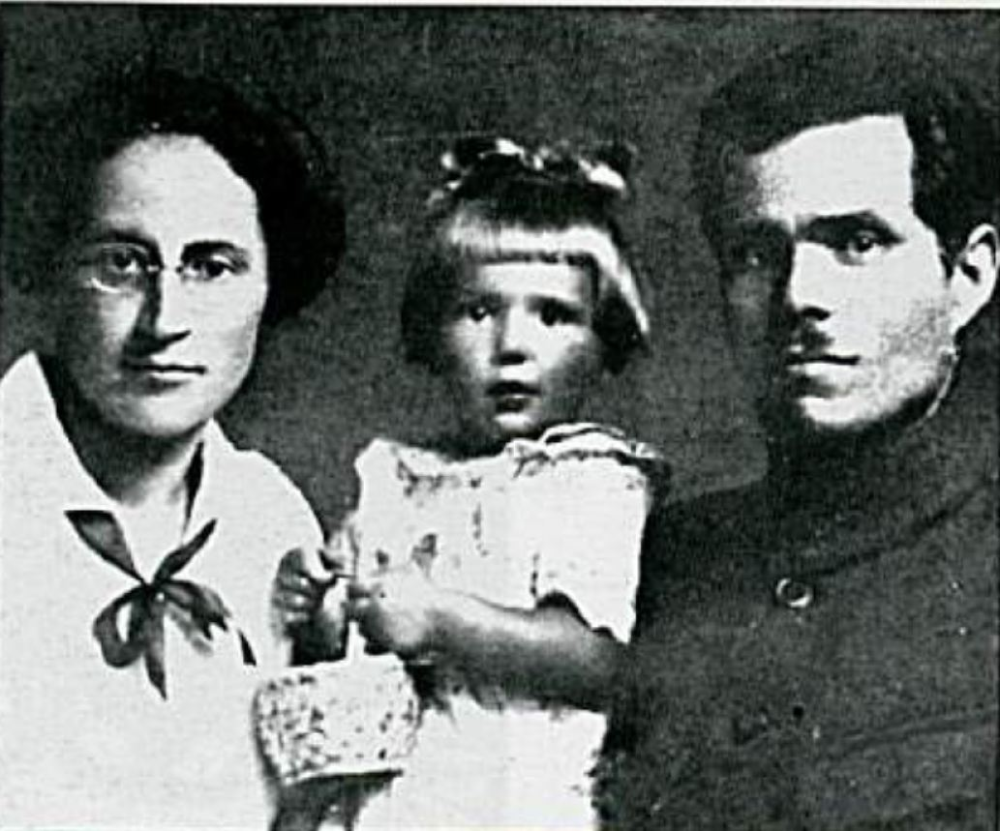

Ce dossier raconte la Makhnovtchina, le mouvement insurrectionnel du sud de l'Ukraine qui porte le nom de son animateur, Nestor Makhno. De 1917 à 1921, au milieu de la guerre civile russe, des centaines de milliers de paysans et d'ouvriers y ont tenté une révolution sans État ni parti au pouvoir. Les bolcheviks l'ont écrasée, puis effacée de l'histoire officielle en traitant ses combattants de « bandits ».
Nestor Makhno, fils de paysans pauvres

- Il naît en 1888 à Houliaïpole, gros bourg rural du sud de l'Ukraine, alors dans l'Empire russe. Son père meurt quand il a moins d'un an ; enfant, il garde les troupeaux et travaille chez les propriétaires.
- Vers 1906, il rejoint un groupe anarchiste-communiste de Houliaïpole, en pleine répression de la révolution de 1905.
- Arrêté en 1908, il est condamné à mort ; à cause de son jeune âge, la peine est commuée en travaux forcés à perpétuité. À la prison de la Boutyrka, à Moscou, il rencontre l'anarchiste Piotr Archinov, qui deviendra l'historien du mouvement.
- La révolution de février 1917 ouvre les prisons. Makhno rentre à Houliaïpole au printemps.
1917 : la terre aux paysans, sans attendre
De retour chez lui, Makhno aide à organiser une union paysanne, un soviet local et des syndicats. Pendant l'été et l'automne 1917, sans attendre de loi ni de gouvernement, les paysans de la région reprennent les terres des grands propriétaires et l'outillage des domaines. Les ouvriers des petites usines du bourg imposent leur contrôle. Pour Makhno, la révolution se fait sur place, par celles et ceux qui travaillent.
1918 : l'occupation et la guérilla
En mars 1918, par le traité de Brest-Litovsk, les bolcheviks abandonnent l'Ukraine aux armées allemande et austro-hongroise. Celles-ci installent un pouvoir à leur botte, l'hetman Skoropadsky, et rendent les terres aux propriétaires. Les villages qui résistent sont punis.
Makhno doit fuir. Il passe par Moscou, où il rencontre Kropotkine, puis Lénine. Il rentre en Ukraine en juillet 1918 et forme de petits détachements de partisans, très mobiles, qui frappent les occupants et les propriétaires. En septembre 1918, après un coup de main audacieux près du village de Dibrivki, les insurgés lui donnent le surnom de « Batko » (« petit père »).
1919 : la région libre au milieu de la guerre civile
À la fin de 1918, les armées allemandes se retirent. L'Ukraine devient un champ de bataille entre les nationalistes de Petlioura, les Blancs tsaristes de Dénikine, l'Armée rouge des bolcheviks et les insurgés. Dans la région de Houliaïpole, les makhnovistes organisent des congrès régionaux de paysans, d'ouvriers et d'insurgés qui décident eux-mêmes des affaires communes. La suite du dossier montre comment cette région libre s'organisait.
Face aux Blancs, les makhnovistes s'allient une première fois à l'Armée rouge, en février 1919, en gardant leur organisation interne. L'alliance se brise en juin, quand Trotsky interdit leur congrès (voir la critique des bolcheviks).
Septembre 1919 : Peregonovka
Pendant l'été 1919, les armées de Dénikine avancent vers Moscou. Les makhnovistes reculent vers l'ouest sur des centaines de kilomètres, avec leurs blessés et des familles de paysans. Le 26 septembre 1919, près du village de Peregonovka, ils font volte-face et battent les troupes blanches qui les poursuivaient. Puis ils foncent vers l'est, reprennent leur région et coupent les lignes de ravitaillement de Dénikine. Beaucoup d'historiens estiment que ce raid a compté dans l'échec de l'offensive blanche sur Moscou.
À l'automne 1919, les makhnovistes tiennent de grandes villes comme Alexandrovsk et Iekaterinoslav. Un congrès régional se réunit à Alexandrovsk fin octobre. Mais le typhus ravage l'armée insurrectionnelle pendant l'hiver.
1920-1921 : trahis, puis écrasés
- Janvier 1920 : l'Armée rouge ordonne aux makhnovistes de partir sur le front polonais, loin de leur région. Ils refusent. Ils sont déclarés hors-la-loi, et les combats reprennent contre les rouges.
- Octobre 1920 : face au général blanc Wrangel, nouvel accord avec les bolcheviks, l'accord de Starobelsk. Les makhnovistes participent à la prise de la Crimée.
- Novembre 1920 : à peine Wrangel vaincu, l'Armée rouge attaque ses alliés par surprise. Les commandants makhnovistes en Crimée sont arrêtés et fusillés ; des anarchistes réunis à Kharkov, dont Voline, sont emprisonnés.
- 1921 : traqués par des forces bien plus nombreuses, les derniers insurgés se battent tout l'été. En août 1921, Makhno, blessé, passe le Dniestr avec quelques dizaines de compagnons et se réfugie en Roumanie.
L'exil à Paris

Après les prisons de Roumanie et de Pologne, Makhno arrive à Paris en 1925, avec sa compagne Galina Kouzmenko et leur fille. Il vit pauvrement, travaille en usine tant que sa santé le permet, écrit ses mémoires et participe aux débats du mouvement anarchiste, notamment autour de la Plateforme publiée en 1926 avec Archinov. Il meurt de la tuberculose en juillet 1934. Ses cendres reposent au columbarium du Père-Lachaise.
Chronologie
- 1888Naissance de Nestor Makhno à Houliaïpole.
- 1908-1917Condamnation, puis prison à Moscou, où il rencontre Archinov.
- Mars 1917Libéré par la révolution de février, retour à Houliaïpole.
- Été-automne 1917Les paysans reprennent les terres des propriétaires.
- Mars 1918Traité de Brest-Litovsk : occupation austro-allemande de l'Ukraine.
- Septembre 1918Dibrivki : Makhno devient « Batko ».
- Janvier-avril 1919Premiers congrès régionaux libres ; première alliance avec l'Armée rouge.
- Juin 1919Trotsky interdit le congrès makhnoviste et le déclare hors-la-loi.
- 26 septembre 1919Victoire de Peregonovka contre les Blancs de Dénikine.
- Janvier 1920Les makhnovistes sont déclarés hors-la-loi par les bolcheviks.
- Octobre-novembre 1920Accord de Starobelsk, campagne de Crimée, puis attaque des rouges contre leurs alliés.
- Août 1921Makhno passe en Roumanie avec ses derniers compagnons.
- Juillet 1934Mort de Makhno à Paris.
Dans ce dossier
- Soviets libres, congrès et armée insurrectionnelle, avec schémas.
- La critique libertaire des bolcheviks : pourquoi les anarchistes ont combattu la « dictature du prolétariat ».
- Dans la bibliothèque : La Fédération comme moyen d'union de Kropotkine, écrit en pleine révolution russe.
Sources et pour aller plus loin
Lire
- Nestor Makhno, le cosaque libertaire (1888-1934), Alexandre Skirda, Éditions de Paris, 1999.La biographie de référence en français, très documentée.
- Histoire du mouvement makhnoviste, Piotr Archinov, 1921.Le récit d'un compagnon de Makhno, témoin direct de la Makhnovtchina.
- La Révolution inconnue, Voline, 1947.La révolution russe vue par un anarchiste qui a dirigé la section culturelle de l'armée makhnoviste.
- La Révolution russe en Ukraine, Nestor Makhno.Les mémoires de Makhno lui-même, écrits en exil à Paris.
Sur le web
- Nestor Makhno sur WikipédiaSa vie, de Houliaïpole au Père-Lachaise.
- La MakhnovtchinaLe mouvement et son territoire.
- Les textes de et sur MakhnoSur la Bibliothèque anarchiste.
Dossier rédigé par la bande à Mamie à partir de travaux d'historiennes et d'historiens et de textes des mouvements concernés. Libre de reproduction.